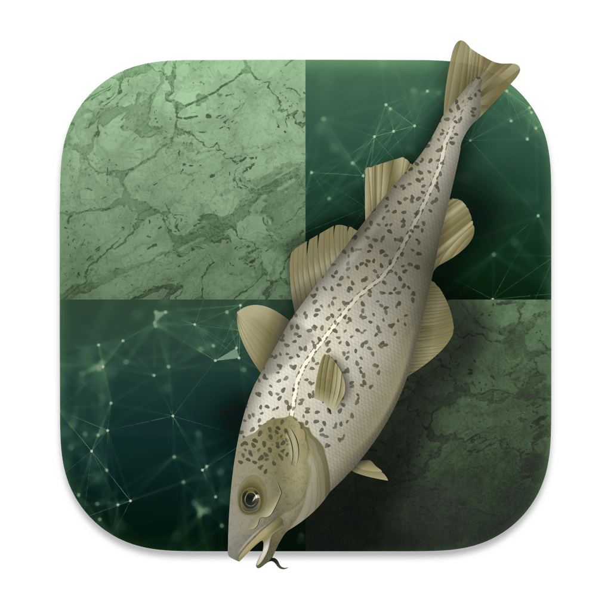

üèÜ Champion Slayer Alpha Zero üó°Ô∏è
Alpha Zero was developed by the artificial intelligence and research company DeepMind, which was acquired by Google. It is a computer program that reached a virtually unthinkable level of play using only reinforcement learning and self-play in order to train its neural networks. In other words, it was only given the rules of the game and then played against itself many millions of times (44 million games in the first nine hours, according to DeepMind).
 AlphaZero uses its neural networks to make extremely advanced evaluations of positions, which negates the need to look at over 70 million positions per second (like Stockfish does). According to DeepMind, AlphaZero reached the benchmarks necessary to defeat Stockfish in a mere four hours.
In 2017 the chess world was shaken to its core when Stockfish (the world's strongest chess engine) was defeated in a one-sided match. It was not defeated by a human but by an unknown computer program that seemed to be otherworldly—AlphaZero. As mentioned, AlphaZero defeated the world's strongest chess engine, Stockfish, in a one-sided 100-game match in December 2017 (scoring 28 wins, 72 draws, and zero losses). The public was given 10 example games from this match, and the chess world's reaction was borderline disbelief.AlphaZero was developed by the artificial intelligence and research company DeepMind, which was acquired by Google. It is a computer program that reached a virtually unthinkable level of play using only reinforcement learning and self-play in order to train its neural networks. In other words, it was only given the rules of the game and then played against itself many millions of times (44 million games in the first nine hours, according to DeepMind).
AlphaZero uses its neural networks to make extremely advanced evaluations of positions, which negates the need to look at over 70 million positions per second (like Stockfish does). According to DeepMind, AlphaZero reached the benchmarks necessary to defeat Stockfish in a mere four hours.
AlphaZero uses its neural networks to make extremely advanced evaluations of positions, which negates the need to look at over 70 million positions per second (like Stockfish does). According to DeepMind, AlphaZero reached the benchmarks necessary to defeat Stockfish in a mere four hours.
In 2017 the chess world was shaken to its core when Stockfish (the world's strongest chess engine) was defeated in a one-sided match. It was not defeated by a human but by an unknown computer program that seemed to be otherworldly—AlphaZero. As mentioned, AlphaZero defeated the world's strongest chess engine, Stockfish, in a one-sided 100-game match in December 2017 (scoring 28 wins, 72 draws, and zero losses). The public was given 10 example games from this match, and the chess world's reaction was borderline disbelief.AlphaZero was developed by the artificial intelligence and research company DeepMind, which was acquired by Google. It is a computer program that reached a virtually unthinkable level of play using only reinforcement learning and self-play in order to train its neural networks. In other words, it was only given the rules of the game and then played against itself many millions of times (44 million games in the first nine hours, according to DeepMind).
AlphaZero uses its neural networks to make extremely advanced evaluations of positions, which negates the need to look at over 70 million positions per second (like Stockfish does). According to DeepMind, AlphaZero reached the benchmarks necessary to defeat Stockfish in a mere four hours.
| Great Images of the Honda S2000 | |||
|---|---|---|---|
 |
|||
|
|||
|  |  |